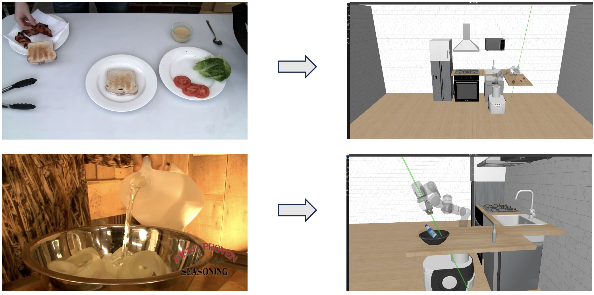
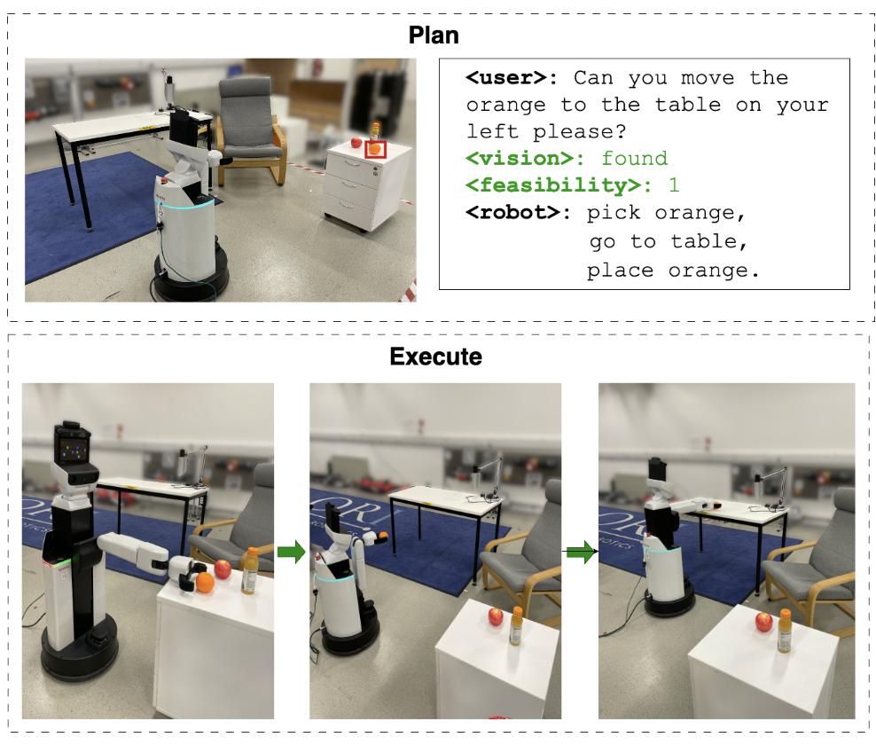
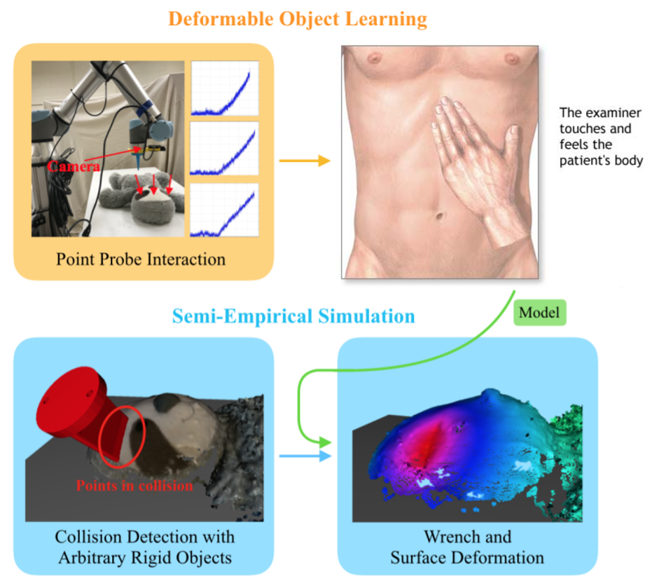
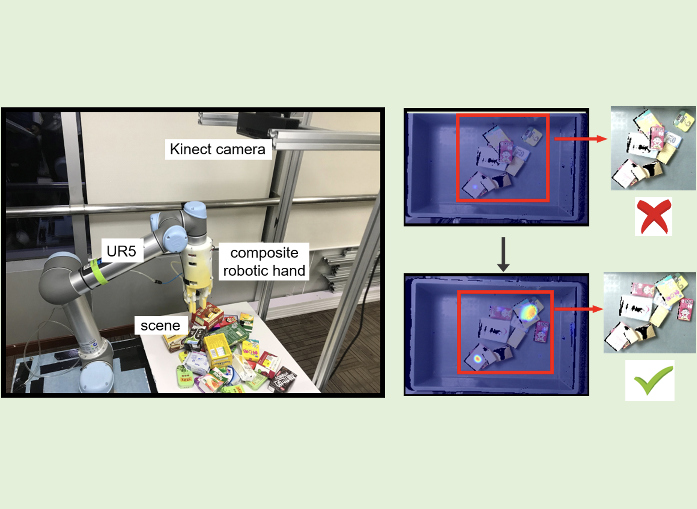

Kai Lu
I am a Research Staff Member at Ant Group (Ant Research US), working on frontier Embodied AI and Robotics research.
I've been selected for Ant Star, Ant Group's top talent program.
Before that, I was a postdoc at the Oxford Robotics Institute in 2026,
working with Prof. Ioannis Havoutis.
I obtained my Ph.D. in Computer Science from the University of Oxford in 2025, supervised by
Prof. Andrew Markham and advised by Prof. Niki Trigoni FREng.
My Ph.D. work was featured by Oxford CS News and British Science Week.
During that time, I interned at Mitsubishi MERL and collaborated with Meta FAIR (Habitat Team).
I received my B.E. in Automation from
Tsinghua University in 2020, with the outstanding graduate honor, where I started research with
Prof. Mingguo Zhao,
Prof. Huaping Liu,
and Prof. Kris Hauser (UIUC).
Research Interests:
⋅ Robotics - Robotic Manipulation, Mobile Manipulators, Human-Robot Interaction
⋅ Machine Learning - Deep Learning, Reinforcement Learning
⋅ Multi-Modality - Robotic 3D Vision, Tactile Sensing, VLM/WAM for Embodied Agents
Service:
⋅ Associate Editor: International Journal of Advanced Robotic Systems (IJARS)
⋅ Reviewer: NeurIPS, RSS, ICRA, IROS, CoRL, RA-L, ICLR, ICMR, BMVC, ICCV, CSUR
Resume
Github
Google Scholar
LinkedIn
Email: lukaiwork01 [at] gmail.com; k.lu [at] antgroup.com

KitchenVLM: Vision-Language Corrections for Robotic Execution of Human Tasks
Kai Lu, Chenyang Ma, Ioannis Havoutis, Chiori Hori, Diego Romeres
US Patent (in submission) & IEEE International Conference on Robotics and Automation (ICRA) 2025 SafeVLM workshop (Spotlight)
Webpage

InteLiPlan: Interactive Lightweight LLM-Based Planner for Domestic Robot Autonomy
Kim Tien Ly, Kai Lu, Ioannis Havoutis
IEEE Robotics and Automation Letters (RA-L)
Webpage
•
PDF
•
Code
Learning Generalizable Manipulation Policy with Adapter-Based Parameter Fine-Tuning
Kai Lu, Kim Tien Ly, William Hebberd, Kaichen Zhou, Ioannis Havoutis, Andrew Markham
IEEE/RSJ International Conference on Intelligent Robots and Systems (IROS) 2024
Webpage
•
PDF
SpatialPIN: Enhancing Spatial Reasoning Capabilities of Vision-Language Models through Prompting and Interacting 3D Priors
Chenyang Ma, Kai Lu, Ta-Ying Cheng, Niki Trigoni, Andrew Markham
Conference on Neural Information Processing Systems (NeurIPS) 2024
Webpage
•
PDF
Learning to Catch Reactive Objects with a Behavior Predictor
Kai Lu, Jia-Xing Zhong, Bo Yang, Bing Wang, Andrew Markham
IEEE International Conference on Robotics and Automation (ICRA) 2024
Webpage
•
PDF
•
Code
Decoupling Skill Learning from Robotic Control for Generalizable Object Manipulation
Kai Lu, Bo Yang, Bing Wang, Andrew Markham
IEEE International Conference on Robotics and Automation (ICRA) 2023
Webpage
•
PDF
•
Code

Semi-Empirical Simulation of Learned Force Response Models for Heterogeneous Elastic Objects
Yifan Zhu, Kai Lu, Kris Hauser
IEEE International Conference on Robotics and Automation (ICRA) 2020
Webpage
•
PDF
•
Code

Deep Reinforcement Learning for Robotic Pushing and Picking in Cluttered Environment
Yuhong Deng*, Xiangfeng Guo*, Yixuan Wei*, Kai Lu*, Bin Fang, Di Guo, Huaping Liu, Fuchun Sun
*: co-first author, equal contribution
IEEE/RSJ International Conference on Intelligent Robots and Systems (IROS) 2019
Webpage
•
PDF
•
Code
2020
Outstanding Graduate Honor, Department of Automation, Tsinghua University2019
Technological Innovation Scholarship, Department of Automation,Tsinghua University2019
Second Place, Adult-Size Technical Challenge, RoboCup 2019 Humanoid World Final2019
First Prize, The 37th Tsinghua Challenge Cup Competition2018
Champion, Robotic Innovation Contest, The 20th Chinese Robotics and Artificial Intelligence Competition2016
Tsinghua Leading Talent Program, Tsinghua University2015
First Prize, Chinese Physics Olympiad (CPhO) Provincial League2014
First Prize, Chinese Mathematical Olympiad (CMO) Provincial League2014
Bronze Medal, China Western Mathematical Olympiad (CWMO)2024
Associate Editor, International Journal of Advanced Robotic Systems (IJARS)2024
Reviewer, ICRA 2025, ICLR 20252023
Reviewer, NeurIPS 2023, ICLR 2024, ICRA 20242026
Started my new job as a Research Scientist at Ant AGI Lab, Ant Research US.2026
Our Paper MotionStruct4D got accepted into IJCV!2026
Our Paper InteLiPlan got accepted into RA-L!2026
Started my Postdoc at Oxford Robotics Institute, University of Oxford.2025
Obtained my Ph.D degree in Computer Science at Oxford.2025
Our Paper KitchenVLM presented at ICRA 2025 SafeVLM workshop (Spotlight)!2025
Our Paper COOPERA got accepted into NeurIPS 2025 (Spotlight)!2025
Completed my intership at Mitsubishi Electric Research Labs in Boston.2024
Submitted my thesis "Embodied Visual Control Policy Learning for Robotic Mobile Manipulation"!2024
Our paper SpatialPIN got accepted into NeurIPS 2024!2024
Our paper GenRob got accepted into IROS 2024!2024
Our paper DynCatch got accepted into ICRA 2024!2023
Successfully defended my Confirmation of Status viva (Examiners: Prof. Niki Trigoni, Prof. Ioannis Havoutis).2023
Our paper DecoupSkill got accepted into ICRA 2023!2022
Started my internship at vLAR group, Hong Kong Polytechnique University.2022
Successfully defended my Transfer of Status viva (Examiners: Prof. Niki Trigoni, Prof. Alessandro Abate).2021
Completed three assessment work for Transfer (one hardest-level course, one survey, and one term paper).2020
Started my D.Phil. journey at University of Oxford.2020
Received my B.Eng. degree with honor from Tsinghua University.